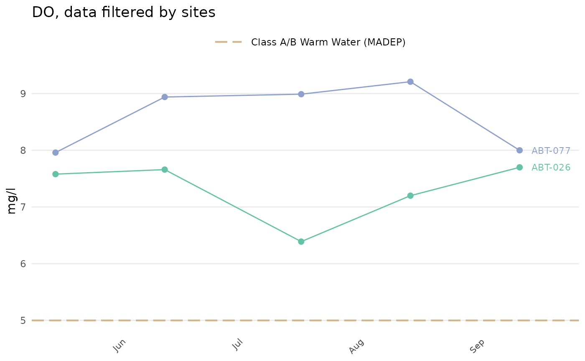

Analyze trends by date in results file
Usage
anlzMWRdate(
res = NULL,
param,
acc = NULL,
sit = NULL,
fset = NULL,
thresh,
group = c("site", "locgroup", "all"),
threshlab = NULL,
threshcol = "tan",
site = NULL,
resultatt = NULL,
locgroup = NULL,
dtrng = NULL,
ptsize = 2,
repel = FALSE,
labsize = 3,
expand = c(0.05, 0.1),
confint = FALSE,
palcol = "Set2",
yscl = "auto",
sumfun = yscl,
colleg = FALSE,
ttlsize = 1.2,
runchk = TRUE,
warn = TRUE
)Arguments
- res
character string of path to the results file or
data.framefor results returned byreadMWRresults- param
character string of the parameter to plot, must conform to entries in the
"Simple Parameter"column ofparamsMWR- acc
character string of path to the data quality objectives file for accuracy or
data.framereturned byreadMWRacc- sit
optional character string of path to the site metadata file or
data.frameof site metadata returned byreadMWRsites, required iflocgroupis notNULL- fset
optional list of inputs with elements named
res,acc,frecom,sit, orwqxoverrides the other arguments- thresh
character indicating if relevant freshwater or marine threshold lines are included, one of
"fresh","marine", or"none", or a single numeric value to override the values included with the package- group
character indicating whether the results are grouped by site (default), combined across location groups, or combined across sites, see details
- threshlab
optional character string indicating legend label for the threshold, required only if
threshis numeric- threshcol
character indicating color of threshold lines if available
- site
character string of sites to include, default all
- resultatt
character string of result attributes to plot, default all
- locgroup
character string of location groups to plot from the
"Location Group"column in the site metadata file, optional and only ifsitis notNULL- dtrng
character string of length two for the date ranges as YYYY-MM-DD, default all
- ptsize
numeric indicating size of the points
- repel
logical indicating if overlapping site labels are offset, default
FALSE- labsize
numeric indicating font size for the site labels, only if
group = "site"orgroup = "locgroup"- expand
numeric of length two indicating expansion proportions on the x-axis to include labels outside of the plot range if
repel = Fandgroup = "site"orgroup = "locgroup"- confint
logical indicating if confidence intervals are shown, only applies if data are summarized using
groupas"locgroup"or"all"- palcol
character string indicating the color palette for points and lines from RColorBrewer, see details
- yscl
character indicating one of
"auto"(default),"log", or"linear", see details- sumfun
character indicating one of
"auto","mean","geomean","median","min", or"max", see details- colleg
logical indicating if a color legend for sites or location groups is included if
group = "site"orgroup = "locgroup"- ttlsize
numeric value indicating font size of the title relative to other text in the plot
- runchk
logical to run data checks with
checkMWRresultsorcheckMWRacc, applies only ifresoraccare file paths- warn
logical to return warnings to the console (default)
Value
A ggplot object that can be further modified.
Details
Results are shown for the selected parameter as continuous line plots over time. Specifying group = "site" plot a separate line for each site. Specifying group = "locgroup" will summarize results across sites in the locgroup argument based on the value passed to sumfun or yscl if no value is passed to sumfun. The site metadata file must be passed to the `sit` argument to use this option. Specifying group = "all" will summarize results across sites for each date based on the value passed to sumfun or yscl if no value is passed to sumfun. Summarized results will include confidence intervals if confint = TRUE and they can be calculated (i.e., more than one point is used in the summary and data are summarized using group as "locgroup" or "all").
Threshold lines applicable to marine or freshwater environments can be included in the plot by using the thresh argument. These thresholds are specific to each parameter and can be found in the thresholdMWR file. Threshold lines are plotted only for those parameters with entries in thresholdMWR and only if the value in `Result Unit` matches those in thresholdMWR. The threshold lines can be suppressed by setting thresh = 'none'. A user-supplied numeric value can also be used for the thresh argument to override the default values. An appropriate label must also be supplied to threshlab if thresh is numeric.
Any acceptable color palette for from RColorBrewer for the points and lines can be used for palcol, which is passed to the palette argument in scale_color_brewer. These could include any of the qualitative color palettes, e.g., "Set1", "Set2", etc. The continuous and diverging palettes will also work, but may return color scales for points and lines that are difficult to distinguish. The palcol argument does not apply if group = "all".
The y-axis scaling as arithmetic (linear) or logarithmic can be set with the yscl argument. If yscl = "auto" (default), the scaling is determined automatically from the data quality objective file for accuracy, i.e., parameters with "log" in any of the columns are plotted on log10-scale, otherwise arithmetic. Setting yscl = "linear" or yscl = "log" will set the axis as linear or log10-scale, respectively, regardless of the information in the data quality objective file for accuracy.
Similarly, the data will be summarized appropriately for group (only applies if group is not site) based on the value passed to sumfun. The default if no value is provided to sumfun is to use the appropriate summary based on the value provided to yscl. If yscl = "auto" (default), then sumfun = "auto", and the mean or geometric mean is used for the summary based on information in the data quality objective file for accuracy. Using yscl = "linear" or yscl = "log" will default to the mean or geometric mean summary if no value is provided to sumfun. Any other appropriate value passed to sumfun will override the value passed to yscl. Valid summary functions for sumfun include "auto", "mean", "geomean", "median", "min", or "max").
Any entries in resdat in the "Result Value" column as "BDL" or "AQL" are replaced with appropriate values in the "Quantitation Limit" column, if present, otherwise the "MDL" or "UQL" columns from the data quality objectives file for accuracy are used. Values as "BDL" use one half of the appropriate limit.
Examples
# results data path
respth <- system.file('extdata/ExampleResults.xlsx', package = 'MassWateR')
# results data
resdat <- readMWRresults(respth)
#> Running checks on results data...
#> Checking column names... OK
#> Checking all required columns are present... OK
#> Checking valid Activity Types... OK
#> Checking Activity Start Date formats... OK
#> Checking depth data present... OK
#> Checking for non-numeric values in Activity Depth/Height Measure... OK
#> Checking Activity Depth/Height Unit... OK
#> Checking Activity Relative Depth Name formats... OK
#> Checking values in Activity Depth/Height Measure > 1 m / 3.3 ft... OK
#> Checking Characteristic Name formats... OK
#> Checking Result Values... OK
#> Checking QC Reference Values... OK
#> Checking for missing entries for Result Unit... OK
#> Checking if more than one unit per Characteristic Name... OK
#> Checking acceptable units for each entry in Characteristic Name... OK
#>
#> All checks passed!
# accuracy path
accpth <- system.file('extdata/ExampleDQOAccuracy.xlsx',
package = 'MassWateR')
# accuracy data
accdat <- readMWRacc(accpth)
#> Running checks on data quality objectives for accuracy...
#> Checking column names... OK
#> Checking all required columns are present... OK
#> Checking column types... OK
#> Checking no "na" in Value Range... OK
#> Checking for text other than <=, ≤, <, >=, ≥, >, ±, %, AQL, BQL, log, or all... OK
#> Checking number of rows per parameter... OK
#> Checking overlaps in Value Range... OK
#> Checking gaps in Value Range... OK
#> Checking Parameter formats... OK
#> Checking for missing entries for unit (uom)... OK
#> Checking if more than one unit (uom) per Parameter... OK
#> Checking acceptable units (uom) for each entry in Parameter... OK
#> Checking empty columns... OK
#>
#> All checks passed!
# site data path
sitpth <- system.file('extdata/ExampleSites.xlsx', package = 'MassWateR')
# site data
sitdat <- readMWRsites(sitpth)
#> Running checks on site metadata...
#> Checking column names... OK
#> Checking all required columns are present... OK
#> Checking for missing latitude or longitude values... OK
#> Checking for non-numeric values in latitude... OK
#> Checking for non-numeric values in longitude... OK
#> Checking for positive values in longitude... OK
#> Checking for missing entries for Monitoring Location ID... OK
#>
#> All checks passed!
# select sites
anlzMWRdate(res = resdat, param = 'DO', acc = accdat, group = 'site', thresh = 'fresh',
site = c("ABT-026", "ABT-077"))
